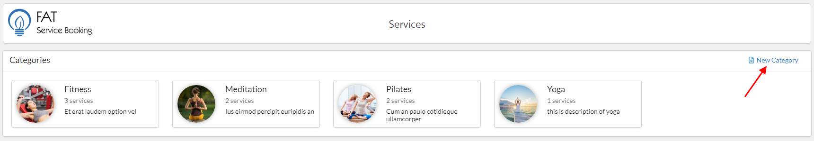
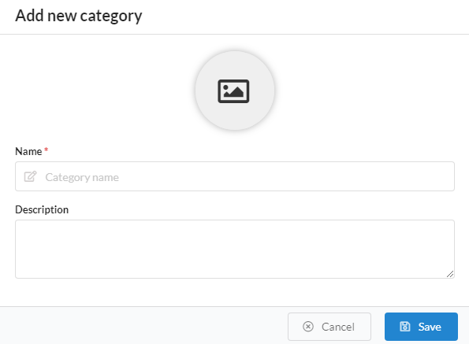
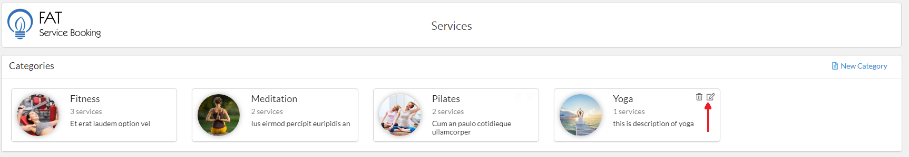
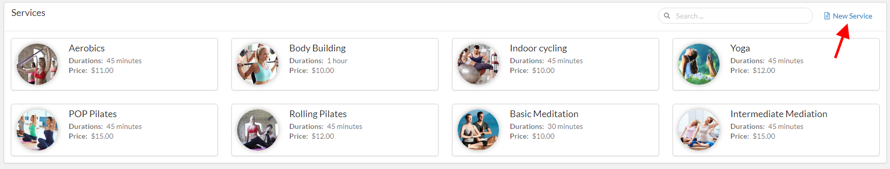
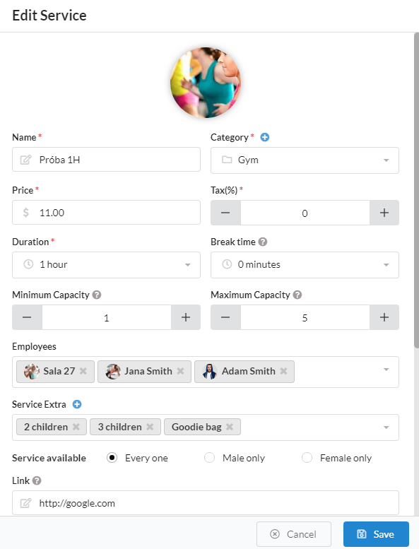
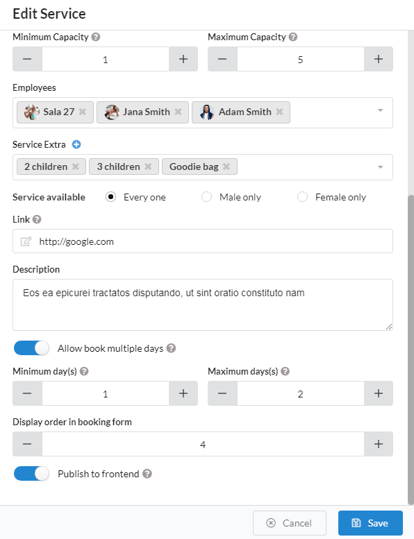

To start using the FAT Service Booking plugin, you first must to create a Service Category.
Creating a category is required because each service needs to be included in a category. To create category and service, please do follow:
Log into your WordPress admin panel.
Navigate to FAT Services Booking » Service.
Click 'New Category' in right screen.
Select image for category and fill name, description of category.
Click 'Save' button to save category info.

Category screen.

Popup create category.
Edit or delete category
After create category, if you want edit or delete category, please hover mouse on category item.
The 'edit' or 'delete' icon will be appearance in top right corner of item. Please click 'edit' icon if you want edit, or 'delete' icon if want delete

Edit or delete category.
Create, edit, delete service
After create category, please go to create service. To create service, please do follow:
Log into your WordPress admin panel.
Navigate to FAT Services Booking » Service.
Click 'New Service' in right screen.
Select image for service and fill another info of service.
Click 'Save' button to save service info.

Create service screen.


Popup create service screen.
Service photo: Click on photo icon, plugin will be open media popup what you can upload or select photo on your site. Select photo for service
Name: This is name of service and it is required
Category: This is category that this service belong.
Price: You need to enter the price of service.
Tax: It have three tax level: 0%, 5%, 10%. If your service don't have tax, please select 0%.
Duration: This is duration of service, it defined how long will the service take.
Break time: Time after the appointment (rest, clean up,...).
Minimum capacity: Minimum number of person per one booking of this service.
Maximum capacity: Maximum number of person per one booking of this service.
Employee: Here you select the employees that will be assigned to the service. If don't have employee in drop down, please go to Create employee
Service Extra: Extras allow you possibility to add additional services or products customers can buy when they are scheduling the appointment.
If don't have service extra in drop down, please click plus icon to create service extra
Service available: This option indicate who can use this service(everyone or male only or female only)
Description: You can add a description for this service at here
Allow book multiple days: If checked, client can book multiple days for this service
Minimum day(s): Minimum number of days for book multiple days
Maximum day(s): Maximum number of days for book multiple days
Display order in booking form: This is order of service in booking form
Publish to service: If you want show on service for admin and don't show on booking form at fronend, you can use this option.
If checked, services will be displayed on booking form
Edit or delete category
After create service, if you want edit or delete service, please hover mouse on service item.
The 'edit' or 'delete' icon will be appearance in top right corner of item. Please click 'edit' icon if you want edit, or 'delete' icon if want delete